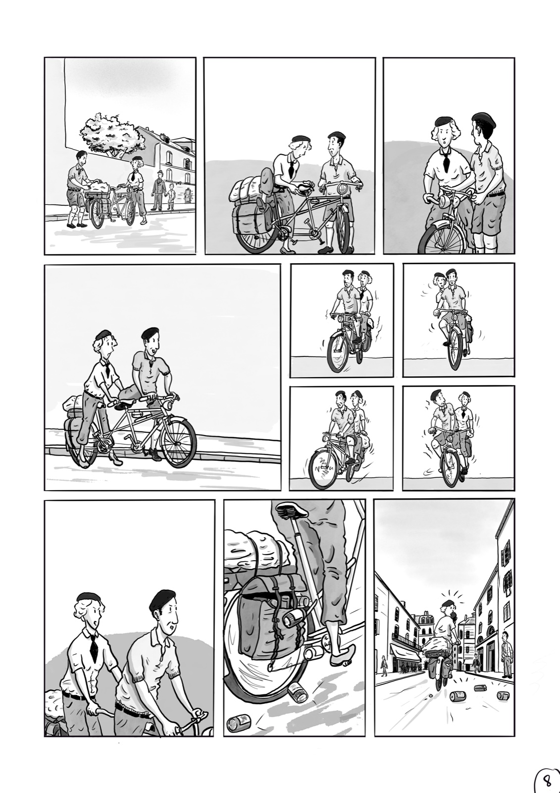
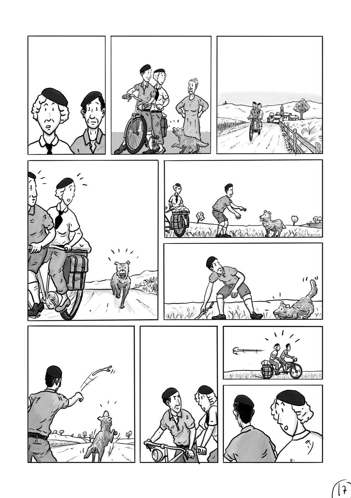
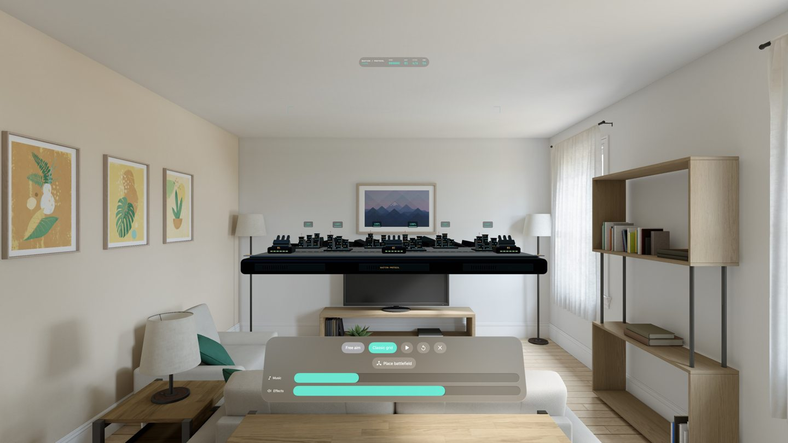
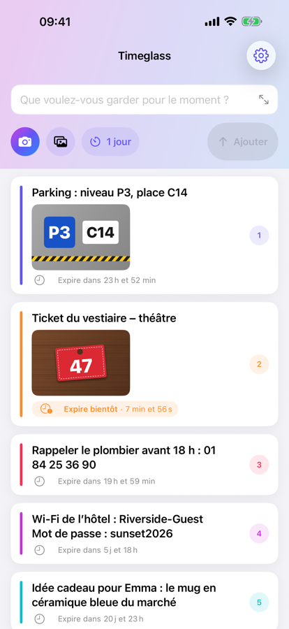
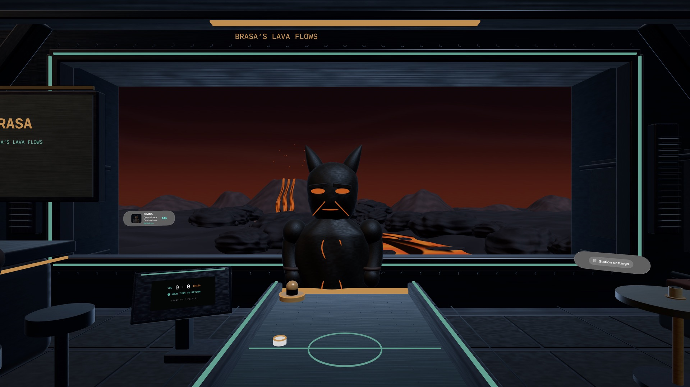

Orbital Puck
visionOSUn café dans l’espace, une table et neuf adversaires. Un petit monde à habiter le temps d’une partie.
Ingénieur, créateur & dessinateur
Je dessine des histoires, je crée des apps et je construis des systèmes. Des univers différents, une même envie : donner forme à ce que j’imagine.
Tout commence par un trait

Le même plaisir de créer. Quel que soit le terrain.
01 / Quelques réalisations
Des projets personnels et collectifs, des cases de BD aux mondes immersifs. Voici quelques portes d’entrée dans mon univers.
Un café dans l’espace, une table et neuf adversaires. Un petit monde à habiter le temps d’une partie.


Des personnages, des lieux et le temps qui passe entre deux cases. Mon autre manière de donner vie à un monde.

L’arcade prend du relief. Protéger six villes, anticiper les trajectoires, viser dans l’espace.

Garder.Un code Wi-Fi, une place de parking, un ticket. Garder l’information juste le temps qu’elle est utile.

Faire des mots rencontrés une collection personnelle. Apprendre, écouter et réviser, à son rythme.

L’ingénierie au service d’une cause écologique : orchestrer l’énergie de communautés résidentielles.
Des idées que l’on peut utiliser.
Retrouver mes projets sur GitHubWakanda / 4D · Une expérience fondatrice
J’ai contribué à Wakanda, une plateforme qui réunissait serveur JavaScript, base de données objet, framework client et studio de développement. Une aventure que j’ai aimée : rendre la création d’applications plus accessible à d’autres développeurs.
Développeur, puis Lead Developer et Chef de projet
02 / L’ingénierie, dans le réel
Head of Software · Homsphere
Chez Homsphere, je dirige l’équipe qui transforme une ambition écologique en système de gestion de l’énergie : faire travailler ensemble production solaire, batteries, véhicules électriques et habitations pour gagner en autonomie énergétique.
L’énergie à l’échelle d’un quartier
Orientations techniques, architectures backend et frontend : construire un ensemble cohérent, des interfaces jusqu’au cloud.
Données, temps réel, IoT, prédiction et optimisation par l’IA : faire fonctionner le logiciel avec les systèmes énergétiques physiques.
Accompagner l’équipe dans les problèmes complexes, rester proche du code et du terrain. Une ingénierie au service d’une cause écologique.
03 / À la main
Un carnet à parcourir, du premier dessin aux dernières planches. Ouvrez une page, passez à la suivante, et laissez l’histoire se dérouler.
D’un trait de crayon à une ligne de code, je retrouve le même plaisir : voir quelque chose prendre forme.
04 / Le fil conducteur

Je ne sépare pas vraiment ce que je crée pour moi de ce que je construis au travail. Le dessin, les apps et l’ingénierie se nourrissent les uns des autres.
J’aime passer d’une idée à quelque chose qui existe : une histoire que l’on peut lire, un jeu dans lequel on entre, un outil qui simplifie le quotidien, un système qui agit sur le monde physique. Ce carnet rassemble ces différentes facettes. Pour les étapes du parcours, il y a aussi LinkedIn.
La suite commence par un échange
Apple Vision Pro · visionOS
Un café spatial, un palet et neuf adversaires qui possèdent chacun leur personnalité, leur monde et leur ambiance musicale. Orbital Puck est un jeu solo natif pour Apple Vision Pro : on guide sa palette avec la main, ou avec le regard et un pincement. Le premier à sept points remporte la partie. Un projet où personnages, interaction et programmation se rencontrent dans un même espace.

Capture du simulateur visionOS, issue du site du projet.
Bande dessinée
Le dessin est une autre manière de construire. Ici, je travaille avec les personnages, les cadrages et le rythme entre les cases. Cette sélection montre des extraits de mon projet de bande dessinée : des planches en noir et blanc et une illustration en couleur. Une place pour raconter, observer et laisser les images faire leur chemin.
Voir la planche en grand ↗Apple Vision Pro · visionOS
Un champ de bataille miniature posé dans son espace. Dans Bastion Protocol, il faut protéger six villes à l’aide de trois batteries, en plaçant chaque interception au bon endroit dans le ciel. Le jeu pour Apple Vision Pro propose la visée libre en trois dimensions, des tourelles mobiles et un son spatial. La géométrie devient un terrain de jeu.
L’aperçu navigateur correspond à une version antérieure du jeu ; l’expérience Vision Pro est plus complète.
Outil du quotidien · App Store
Certaines informations n’ont besoin de rester que quelques heures ou quelques jours : un code Wi-Fi, une place de parking, la photo d’un ticket. Timeglass donne une durée de vie aux notes et aux photos, puis les efface automatiquement à l’échéance. On peut renouveler, partager et recevoir un rappel avant expiration. Sans compte, sans publicité et sans suivi analytique ; la synchronisation utilise son propre iCloud.
Apprentissage des langues · App Store
Lexilo transforme les mots et expressions rencontrés en une collection personnelle, organisée en listes. Des fiches de révision, de la dictée et la répétition espacée aident à les retenir. Les langues peuvent s’apprendre côte à côte, avec écoute à vitesse normale ou ralentie. Les données restent sur l’appareil et dans son propre iCloud, sans compte, publicité ni suivi analytique.